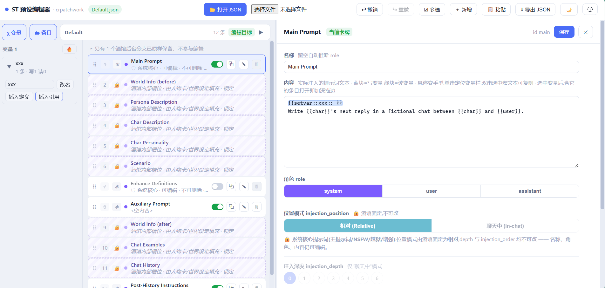

一个 SillyTavern（酒馆）预设可视化编辑器
把你正在拼的那堆 prompt，拖拽理顺、看清每个位置

为经常折腾预设的酒馆玩家设计，每个功能都从真实编辑流程里长出来
左列一张卡 = 一条提示词。按住拖动即换顺序，多选批量挪，注入顺序一目了然。
内容、role、注入位置、深度、order 全部可改，改动即存草稿，导出才落盘。
自动识别由人物卡填充的条目与系统核心提示词，分类保护，手滑也改不坏预设结构。
自动扫描全预设的 setvar / getvar：读写分账、点击高亮定位、批量改名、一键插入宏。
开两个页面就能在预设之间互抄条目，拼接别人的好片段像拼布一样自然。
删除、换序、改名全部可回退，手滑有后悔药；改动被打断还会弹窗护住现场。
深浅两套主题，偏好自动记住，深夜拼预设不晃眼。
导出 JSON 只重写 prompts / prompt_order，其余字段原样保留，酒馆直接读回。
右上「📂 打开 JSON」，或把 .json 预设文件直接拖进窗口。
拖动卡片理顺顺序，点卡片编辑内容，变量、槽位、多选都是顺手的事。
「⬇ 导出 JSON」得到 xxx_edited.json，放进 SillyTavern 预设目录即可使用。
不要，完全免费、开源（MIT 协议）、无需注册。打开网页就能用。
不会。crpatchwork 是纯客户端工具，所有解析、编辑、导出都发生在你自己的浏览器里，没有任何服务器参与，断网也能正常使用。
预设 JSON 动辄几百行，prompt_order 与 prompts 双列表交错、深度注入位置看不见摸不着。crpatchwork 把这些变成看得见的卡片：拖拽即换序、槽位自动锁定、变量一目了然，且导出只动该动的字段，不碰预设其余结构。
可以。界面为窄屏做了适配，手机浏览器打开同一地址即可；但拖拽排序这类操作在电脑上手感更好。
撤销/重做全程可用；关闭页面前若有未保存的改动，会弹窗确认，不留意外。